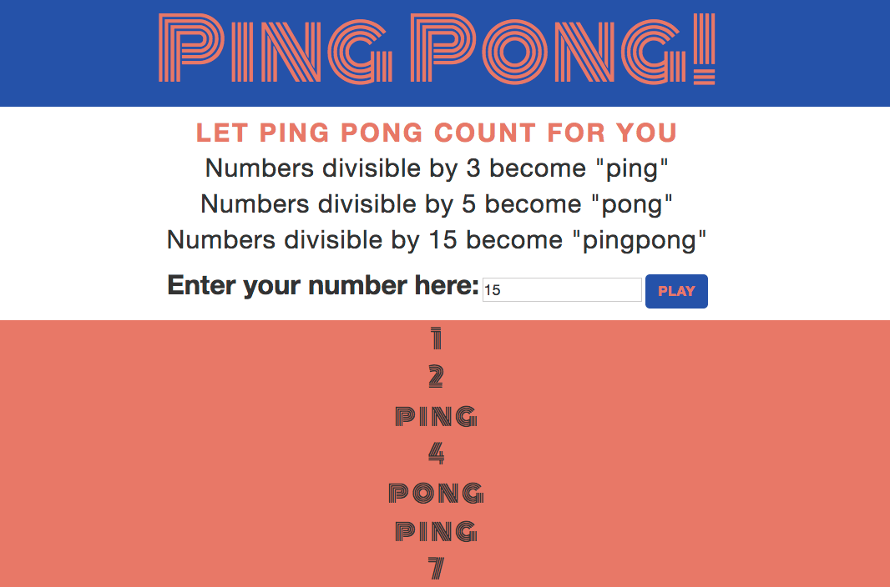
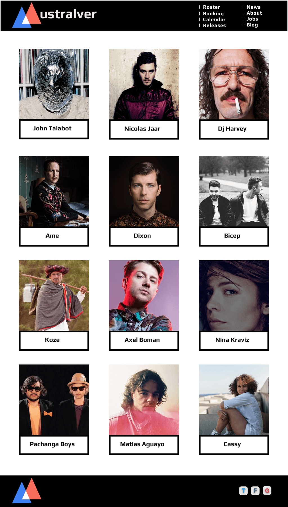
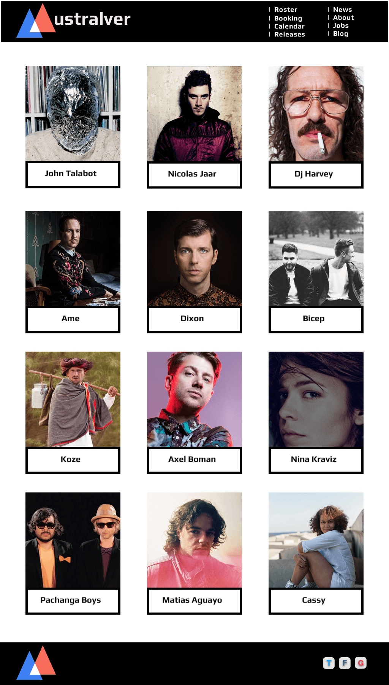
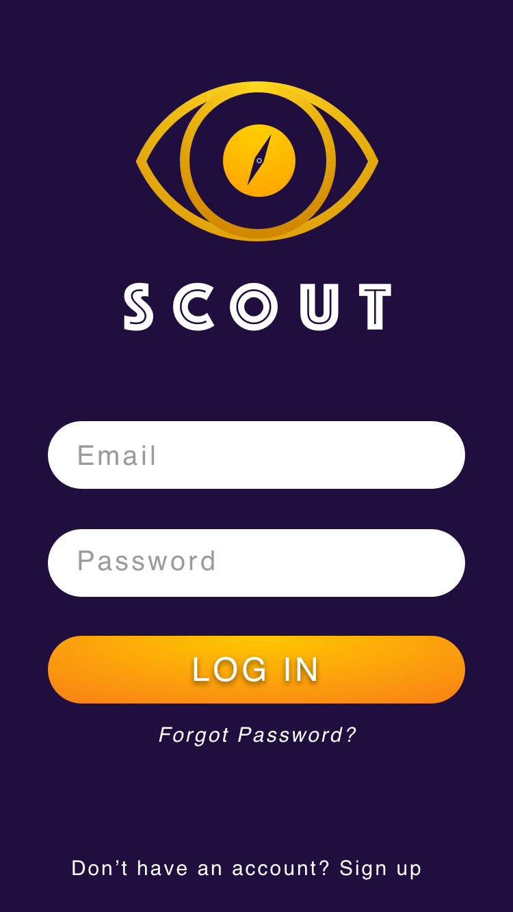
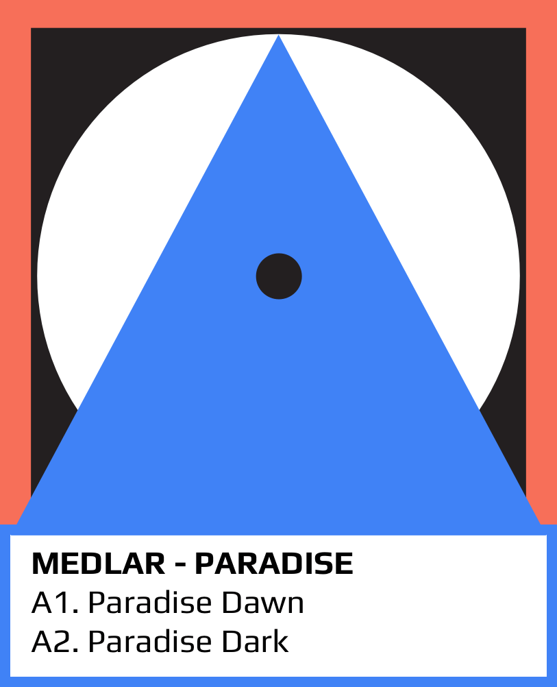
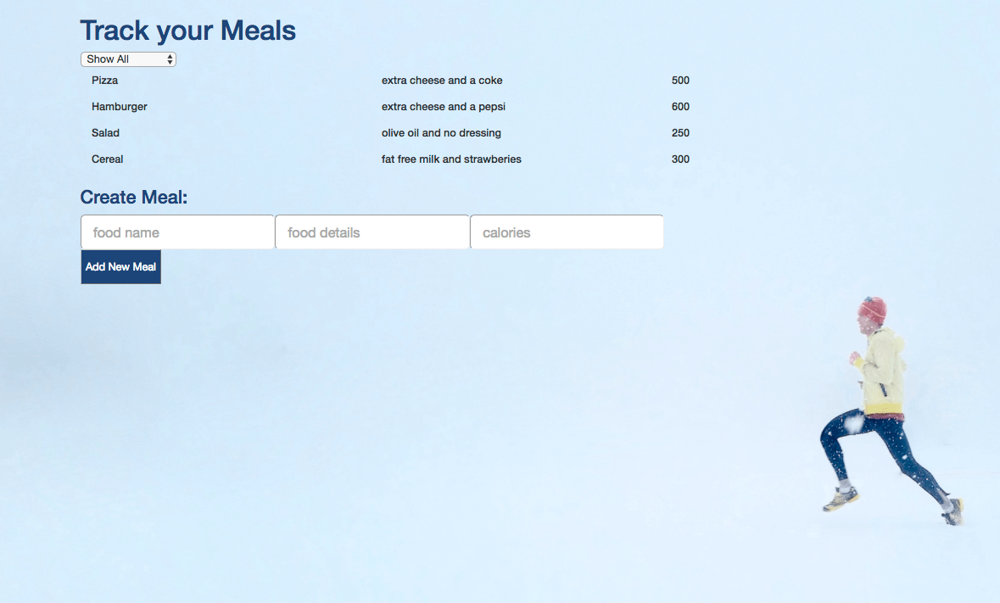
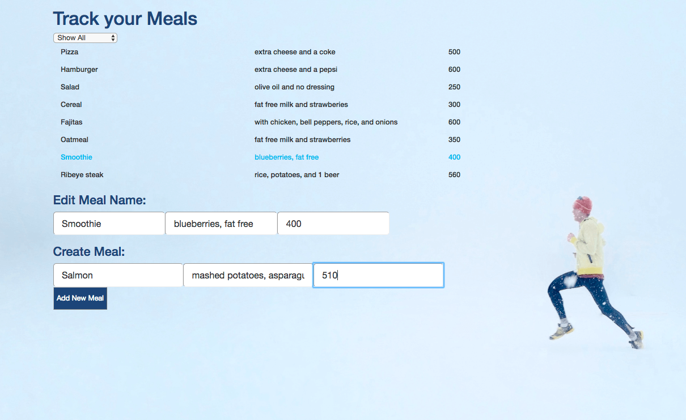

City Temperature
Node / HTML / CSS

This project was made during the first week of Javacript class. It uses the Open Weather Map API to tell you the humidity and temperature of the city you search. View Project in Github
Volunteer Connection
Javascript / HTML / CSS

Volunteer Connection will display a list of volunteer organizations based on user input, using an API from the All For Good organization. Launch Project or view code on Github
Andersson Wise
HTML / CSS


This is a responsive webpage similar to the Andersson-Wise website. It has media queries for mobile phones, tables, big screens. This project was made during the first week of CSS class. It was a great way to practice media queries. Launch project
Ping Pong
Javascript / HTML / CSS
Ping Pong test website. Numbers divisible by 3 become "Ping", numbers divisible by 5 become "Pong" and numbers divisible by 15 become "Ping Pong". My UI inspiration for this project was the logo of the 70's Soccer World Cup after it was voted one the best logos in the history of FIFA. Launch project or view code in Github
Australver
Sketch / Invision
 

Australver is a Sketch designed and Invision prototyped booking agency website for musicians. I did this project during my design class and I will be showcasing it as my "demo day" project at Epicodus once I code it. View project in InVision
Trackers Earth Internship
HTML / CSS / Javascript


I interned at Tracker Earth in Portland, Oregon for almost two months. I worked closely with their Sr. Developer and Designer where I coded parts of their home page, their splash page, various modals. During the last week of my internship I started working on a space ship game using Javascript. This website has yet to be published as of January/2017.
SASS
SASS / HTML

I made this website to practice SASS and using mixins, extends, and using variables. It has media queries for mobile, tablet, and desktop. I found SASS very helpful to work faster, more effient, and easy to come back to old projects and update them by just changing the variables values. My favorite thing about SASS is the nesting feature specilly nesting media queries. Launch Project or view code on Github
Scout
Sketch / Pencil / Eraser
Scout was a group project where we had to design and app that people would use to get out more. I was in charge on drawing sketches, designing the home page in sketch among other things. These are examples of the final project.

These vinyl records were created in Sketch. The task was to make something out of just circles, triangles, and squares only. I learned that logos that really work are usually made out of the most basics shapes. These vinyl covers then ended up being used on my Australver booking agency project because I was very very happy how they turned out.
Meal Tracker
Angular / HTML / CSS
 Meal Tracker was done using Angular 2. This app allows you to add new meals, edit them, and filter out between healthy vs unhealthy depending on their calorie count. Out of the Javascripts frameworks that we reviewed at school, Angular 2 was the one I enjoyed working with the most and felt more confortable with it. View project on Github